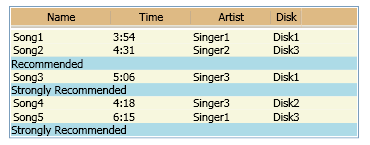

Общие сведения о GridView
GridView режим — один из режимов представления для ListView элемента управления. GridView Класса и его вспомогательные классы позволяют вам и пользователям для просмотра коллекций элементов в таблице, в качестве интерактивных заголовков столбцов обычно используются кнопки. В данном разделе представлены GridView класса и возможности его использования.
Что такое представление GridView?
GridView Представления в режиме отображается список элементов данных посредством привязки полей данных к столбцам и отображения заголовка столбца для идентификации поля. Значение по умолчанию GridView стиля реализует кнопок заголовков столбцов. С помощью кнопок для заголовков столбцов, можно реализовать возможности взаимодействия с пользователем важно; Например, пользователям можно щелкнуть заголовок столбца для сортировки GridView данные в соответствии с содержимым конкретного столбца.
Note
Кнопочные элементы управления, GridView использует для заголовков столбцов являются производными от ButtonBase.
На следующем рисунке показано GridView представление ListView содержимого.

GridView столбцы представляются GridViewColumn объекты, размер которых может автоматически в соответствии с содержимым. При необходимости можно явно задать GridViewColumn ширину. Можно изменить размеры столбцов, перетащив границу между заголовками столбцов. Также динамически можно добавлять, удалять, заменять и изменять порядок столбцов, так как эта функция встроена в GridView. Тем не менее GridView нельзя напрямую обновлять данные, он отображает.
В следующем примере показано определение GridView , отображаются данные о сотрудниках. В этом примере ListView определяет EmployeeInfoDataSource как ItemsSource. Определения свойств для DisplayMemberBinding привязать GridViewColumn содержимого EmployeeInfoDataSource категории данных.
<ListView ItemsSource="{Binding Source=
{StaticResource EmployeeInfoDataSource}}">
<ListView.View>
<GridView AllowsColumnReorder="true"
ColumnHeaderToolTip="Employee Information">
<GridViewColumn DisplayMemberBinding=
"{Binding Path=FirstName}"
Header="First Name" Width="100"/>
<GridViewColumn DisplayMemberBinding=
"{Binding Path=LastName}"
Width="100">
<GridViewColumnHeader>Last Name
<GridViewColumnHeader.ContextMenu>
<ContextMenu MenuItem.Click="LastNameCM_Click"
Name="LastNameCM">
<MenuItem Header="Ascending" />
<MenuItem Header="Descending" />
</ContextMenu>
</GridViewColumnHeader.ContextMenu>
</GridViewColumnHeader>
</GridViewColumn>
<GridViewColumn DisplayMemberBinding=
"{Binding Path=EmployeeNumber}"
Header="Employee No." Width="100"/>
</GridView>
</ListView.View>
</ListView>
На следующем рисунке показана таблица, которая создается в предыдущем примере. Элемент GridView отображает данные из ItemsSource объекта:

Макет и стиль GridView
Ячейки и заголовок GridViewColumn имеют одинаковую ширину. По умолчанию ширина каждого столбца изменяется в соответствии с шириной содержимого. При необходимости можно установить фиксированную ширину столбца.
Связанные данные отображаются в горизонтальных строках. Например, на предыдущем рисунке фамилия, имя и идентификационный номер каждого сотрудника отображаются в виде набора, поскольку они отображаются в горизонтальной строке.
Определение и применение стилей к столбцам в GridView
При определении поля данных для отображения в GridViewColumn, использовать DisplayMemberBinding, CellTemplate, или CellTemplateSelector свойства. DisplayMemberBinding Свойство имеет приоритет над любым из свойств шаблона.
Чтобы указать выравнивание содержимого в столбце GridView, определить CellTemplate. Не используйте HorizontalContentAlignment и VerticalContentAlignment свойства ListView содержимое, которое отображается с помощью GridView.
Чтобы указать свойства шаблонов и стилей для заголовков столбцов, используйте GridView, GridViewColumn, и GridViewColumnHeader классы. Дополнительные сведения см. в разделе Общие сведения о стилях заголовков столбцов GridView и шаблонах.
Добавление визуальных элементов в GridView
Чтобы добавить визуальные элементы, такие как CheckBox и Button управляет, GridView режим просмотра, используйте шаблоны или стили.
Если явно определить визуальный элемент в качестве элемента данных, он может присутствовать только один раз в GridView. Это ограничение существует, так как элемент может иметь только один родительский элемент и, таким образом, может появляться, только один раз в визуальном дереве.
Применение стилей к строкам в GridView
Используйте GridViewRowPresenter и GridViewHeaderRowPresenter классы для форматирования и отображения строк GridView. Пример того, как стилей к строкам в GridView режим просмотра, см. в разделе стиля строки в ListView, реализующем GridView.
Проблемы выравнивания при использовании ItemContainerStyle
Чтобы предотвратить проблемы выравнивания между заголовками столбцов и ячейками, не задания свойства или указать шаблон, который влияет на ширину элемента в ItemContainerStyle. Например, не устанавливайте Margin свойства или указать ControlTemplate , добавляющий CheckBox для ItemContainerStyle , определенному в ListView элемента управления. Вместо этого укажите свойства и шаблоны, которые влияют на ширину столбца, непосредственно в классах, определяющих GridView режим просмотра.
Например, чтобы добавить CheckBox к строкам в GridView режим просмотра, добавления CheckBox для DataTemplateи задайте CellTemplate свойства DataTemplate.
Взаимодействие пользователя с GridView
При использовании GridView в приложении, пользователи могут взаимодействовать с и изменить форматирование GridView. Например, пользователи могут изменить порядок столбцов, изменить размер столбца, выделить элементы в таблице и прокрутить содержимое. Можно также определить обработчик событий, реагирующий на нажатие пользователем кнопки заголовка столбца. Обработчик событий может выполнять такие операции, как сортировка данных, который отображается в GridView в соответствии с содержимым столбца.
Ниже более подробно рассматриваются возможности использования GridView для взаимодействия с пользователем:
Изменение порядка столбцов с помощью метода перетаскивания и вставки.
Пользователи могут изменить порядок столбцов в GridView путем нажатия левой кнопки мыши над заголовком столбца и перетаскивания этого столбца в новую позицию. Пока пользователь перетаскивает заголовок столбца, отображается плавающей версии заголовка, а также сплошная черная линия, показывающая место вставки столбца.
Если вы хотите изменить стиль по умолчанию для плавающей версии заголовка, укажите ControlTemplate для GridViewColumnHeader типа, который является инициируется при Role свойству Floating. Дополнительные сведения см. в разделе Как создать стиль для перетаскиваемого заголовка столбца GridView.
Изменение размера столбца по его содержимому.
Пользователям можно дважды щелкнуть границу справа от заголовка столбца, чтобы изменить размер столбца в соответствии с содержимым.
Note
Можно задать Width свойства
Double.NaNдля создания такой же эффект.Выбор элементов строк.
Пользователи могут выбрать один или несколько элементов в GridView.
Если вы хотите изменить Style выбранного элемента, см. в разделе Применение триггеров для определения стиля выбранных элементов в ListView.
Прокрутка для просмотра содержимого, не отображается на экране изначально.
Если размер GridView является недостаточен для отображения всех элементов, пользователи смогут прокручивать горизонтально или вертикально с помощью полосы прокрутки, которые предоставляются элементом ScrollViewer элемента управления. Объект ScrollBar скрыт, если все содержимое является видимым в определенном направлении. При использовании полос прокрутки заголовки столбцов не прокручиваются по вертикали, но могут прокручиваться по горизонтали.
Взаимодействие со столбцами путем нажатия кнопок заголовков столбцов.
При нажатии кнопки заголовка столбца можно отсортировать данные, которые отображаются в столбце, если указан алгоритм сортировки.
Можно обрабатывать Click событий для кнопок заголовков столбцов, чтобы обеспечить функциональные возможности алгоритма сортировки. Для обработки Click событий для одного заголовка столбца, задайте обработчик событий на GridViewColumnHeader. Чтобы задать обработчик событий, который обрабатывает Click событий для всех заголовков столбцов, задайте обработчик для ListView элемента управления.
Получение других настраиваемых представлений
GridView Класс, который является производным от ViewBase абстрактного класса, является только одним из возможных режимов представления для ListView класса. Можно создать другие настраиваемые представления для ListView путем наследования от ViewBase класса. Пример настраиваемого режима представления см. в разделе Создание пользовательского режима представления для ListView.
Вспомогательные классы GridView
Следующие классы поддерживают GridView режим просмотра.